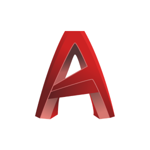

Autodesk Autocad

Desde que comence uso este software que me permite diseñar los planos de tu proyecto de manera profesional
¡Hola! Soy Nicolás Rodríguez Briz, arquitecto graduado de la Universidad Nacional de Tucumán, con más de 20 años de experiencia en proyectos para clientes diversos. Me apasiona el diseño 3D, lo cual me permite dar vida a ideas y conceptos de manera detallada y visualmente impactante.
Mi enfoque está en crear espacios estéticamente agradables, funcionales y sostenibles, siempre colaborando estrechamente con mis clientes para materializar sus visiones.
Me mantengo actualizado con las últimas tendencias y tecnologías en arquitectura para ofrecer soluciones innovadoras y de alta calidad en cada proyecto.
Si buscas un arquitecto dedicado y apasionado, ¡estaré encantado de trabajar contigo!
Desde que comence uso este software que me permite diseñar los planos de tu proyecto de manera profesional
Hace 5 años que descubrí Sketchup y he logrado hacer renders 3D de los que estoy muy contento de su resultado.
Esta herramienta de diseño gráfico me viene acompañando desde mis días de estudiante.
Simple pero potente, con Filmora hago videos de presentaciones de tu proyecto.
Gracias a Enscape tengo un workflow perfecto que me permite diseñar y ver en tiempo real el render en 3D.
Siempre hay que hacer cálculos y presupuestos, he optado por Sheets como mi herramienta preferida.